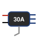
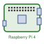

Quadcopter built from scratch on a Pixhawk PRO
2026-01-01
A quadcopter built from parts and flown from a laptop program over a 433 MHz telemetry link.

Hardware
| Part | What it is | Qty | Price (€) | Where | |
|---|---|---|---|---|---|
| Pixhawk PRO kit | Pixhawk PRO flight controller (STM32F4 @ 168 MHz, 2 MB flash, FMUv3-class, GH1.25 connectors, USB-C, 80 × 48 × 15 mm) + u-blox M8N GPS / compass with mast + PM02 V3.2 power module (2–12S, 5.2 V / 3 A, V/I sensing) + safety switch & buzzer + SiK telemetry radios V5 (433 MHz, 100 mW, ground + air) + cables + vibration mount | 1 kit | 143.99 | AliExpress | |
| F450 frame kit | HAWK’S WORK F450: 450 mm wheelbase, glass-fibre and nylon, 2 white + 2 red arms, landing gear, pre-soldered bottom plate = power distribution board (MTOW ≈ 1.8 kg) | 1 | 37.99 | Amazon | |
|  |
Motor + ESC + propeller sets | each set: A2212 13T 1000KV brushless motor + 30 A SimonK ESC (5 V / 2 A BEC) + 2 propellers 1045 (so 4 spare propellers) | 4 sets | 4 × 18.99 = 75.96 | Amazon |
| Battery | AMZZN LiPo 3S 11.1 V, 3000 mAh, 35C, XT60, with its USB charger | 1 | 34.99 | Amazon | |
 |
Raspberry Pi 4 Model B | 2 GB, Raspberry Pi OS 32-bit on a 32 GB micro-SD card (25 €) | 1 | ≈ 65 + 25 | — |
| Connectors and safety | brass bullet connectors, crimped by hand — no soldering on this build (11.99) · 3 pairs of XT60 connectors (9.99) · 2 LiPo-safe charging bags (10.00) | 31.98 | bullets · XT60 · bags | ||
| Total | ≈ 415 |
System overview and wiring

Raspberry Pi setup
The Pi’s place in the system (UART pins, 5 V feed, TELEM 2, MAVProxy) is on the diagram above.
- Board and OS. Raspberry Pi 4 Model B (2 GB), Raspberry Pi OS 32-bit flashed on a micro-SD card, joined to a secured Wi-Fi network, administered over SSH.
- Link. The Pi’s UART (
/dev/serial0: GPIO 14 TXD on pin 8, GPIO 15 RXD on pin 10, GND on pin 6) is wired crosswise to the Pixhawk’s TELEM 2 port; MAVLink 2 at 57 600 baud. The connector’s 5 V pin powers the Pi (pin 2). - Reference. ArduPilot wiki — Communicating with Raspberry Pi via MAVLink.
Flight-controller parameters (set in QGroundControl):
| Parameter | Value | Effect |
|---|---|---|
SERIAL2_PROTOCOL |
2 (MAVLink 2) | TELEM 2 talks MAVLink to the Pi |
SERIAL2_BAUD |
57 (57 600 baud) | must match --baudrate on the Pi |
1. Enable the UART on the Pi with sudo raspi-config → Interfacing Options → Serial, then answer No to the login shell over serial and Yes to the serial port hardware, and reboot: the UART is then available as /dev/serial0.

raspi-config: Interfacing Options.
Screenshots from the ArduPilot wiki (© ArduPilot Dev Team, CC BY-SA 3.0).
2. Packages and a virtual environment for pymavlink / MAVProxy:
sudo apt-get update
sudo apt-get install python3-wxgtk4.0 python3-matplotlib python3-opencv python3-pip \
python3-numpy libxml2-dev libxslt1-dev python3-dev
sudo apt install python3-venv python3-full # pip needs a venv on recent Raspberry Pi OS
mkdir ~/mavlink_project && cd ~/mavlink_project
python3 -m venv venv
source venv/bin/activate
pip install pymavlink
pip install mavproxy3. Start the link (the same commands every session, by hand over SSH — not a boot service yet):
cd ~/mavlink_project && source venv/bin/activate
mavproxy.py --master=/dev/serial0 --baudrate 57600 --aircraft MyCopterMAVProxy connects to the Pixhawk and shows the vehicle’s heartbeat; --aircraft MyCopter keeps its logs in a MyCopter/ folder. Nothing else runs on the Pi yet; this link is what automated control from the Raspberry Pi will use later.
QGroundControl setup

Ground control
There is no RC transmitter. The drone is flown from the Mac with mavcontrol.py, a Python + pygame keyboard controller built on pymavlink (repository: how2222/pixhawk-drone), through the pair of SiK telemetry radios (433 MHz, 100 mW): the ground module plugs into the Mac over USB, the air module sits on TELEM 1. Flight modes tested: Stabilize and Alt Hold.

mavcontrol.py at launch, before the radio is plugged in: the keys on the left, the telemetry monitor (parameters, attitude, motor PWM) and the command line on the right.Test flight
First lift-off indoors on 12 April 2026, in Stabilize then Alt Hold (video below). The drone arms, spins up and leaves the ground, but rotates strongly about its vertical axis in both modes, and in Stabilize it also drifts about 40 cm during the climb — so flights have stayed at ground level.
Known issue: yaw spin at take-off
What was found and fixed so far. The first outdoor attempt (early April 2026, in a forest clearing) failed with asymmetric thrust: the drone tilted instead of climbing. The cause was the board itself: the numbers printed next to the Pixhawk PRO’s MAIN OUT pins do not match the outputs the firmware actually drives, so the ESCs, plugged in by following those numbers, were not on the motors the mixer expected. Remapping the SERVOn_FUNCTION parameters to the real wiring, recalibrating the ESCs and correcting the CW / CCW propellers got the drone to lift off (8–12 April). No motor was ever found damaged or weaker. What was tried without success: raising the yaw-rate gains (ATC_RAT_YAW_P 0.18 → 0.35, I 0.018 → 0.05, IMAX 0.5 → 1) and MOT_YAW_HEADROOM 200 → 400.
Links
- ArduPilot references used for the wiring: Pixhawk overview · connecting ESCs and motors.
- Repository: how2222/pixhawk-drone —
mavcontrol.pyand the Raspberry Pi procedure.